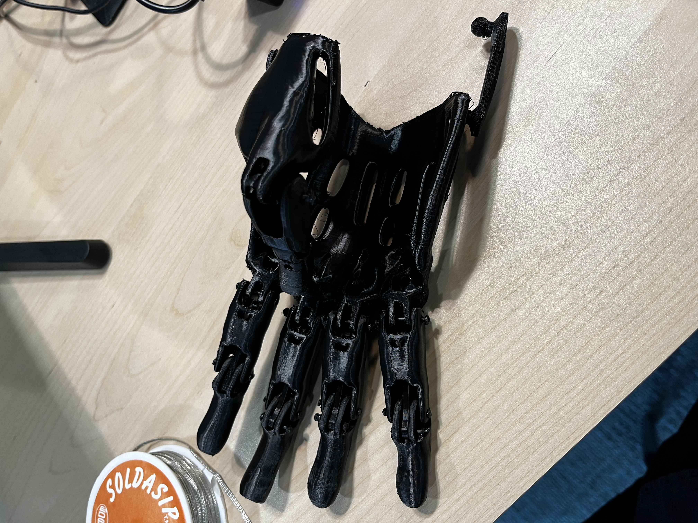
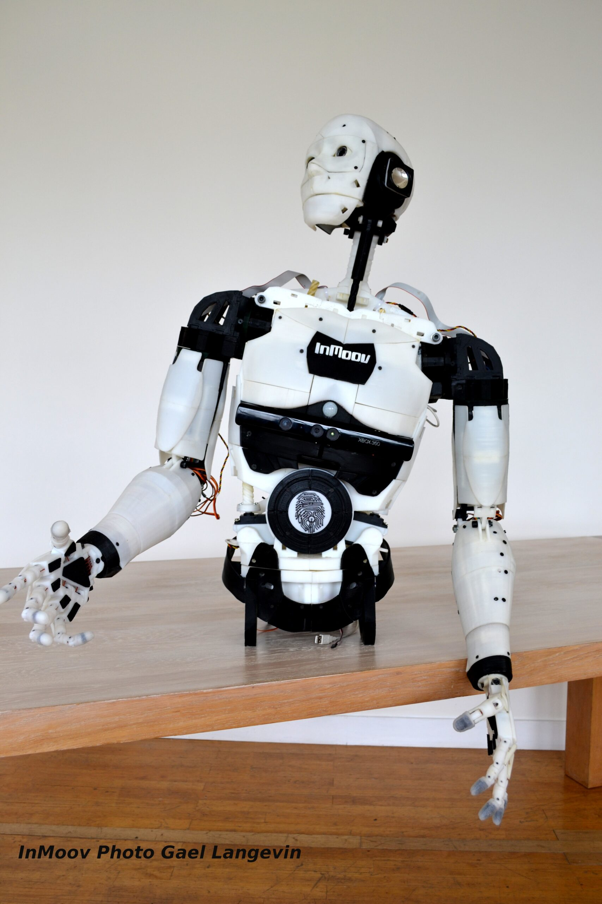

Projet
Bonjour à tous ! je suis aussi passionné par la robotique DIY (Do It Yourself). Récemment, je me suis lancé dans un projet passionnant : la reproduction du célèbre robot InMoov.
InMoov est un projet Open Source initié par Gael Langevin, un sculpteur et designer français. Il s'agit du premier robot à taille humaine entièrement imprimé en 3D, conçu pour être répliqué sur n'importe quelle petite imprimante 3D avec une surface d'impression de 12x12x12 cm.
Mon objectif est de comprendre les mécanismes et les techniques utilisées dans la conception et la fabrication d'InMoov, tout en ajoutant ma propre touche personnelle au projet. Je suis impatient de partager avec vous mon parcours, mes défis et mes réussites tout au long de cette aventure passionnante !


//Retourner au menu principal